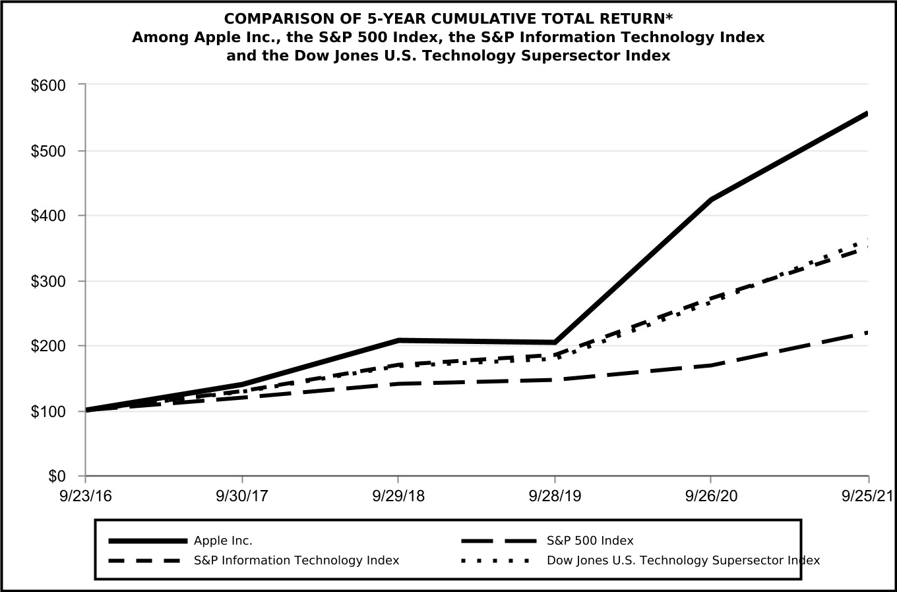
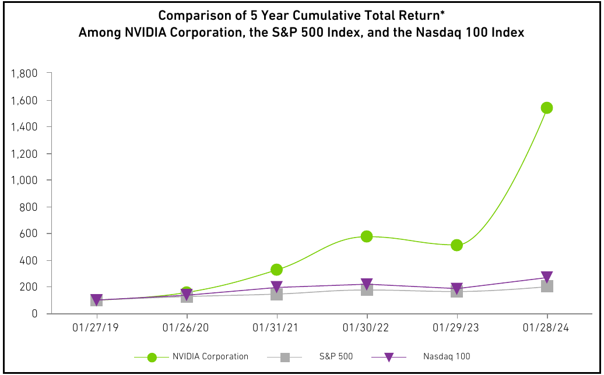
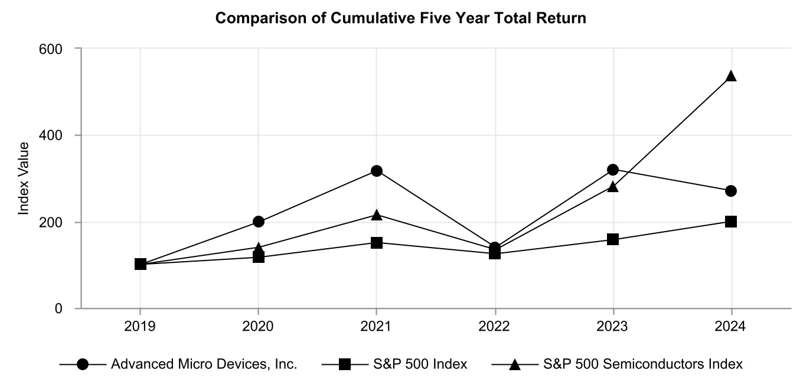
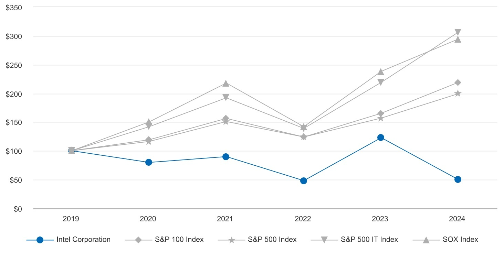
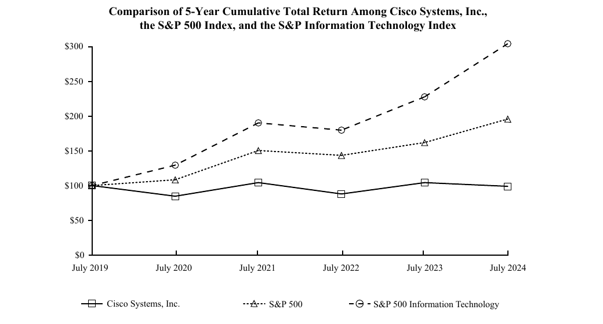
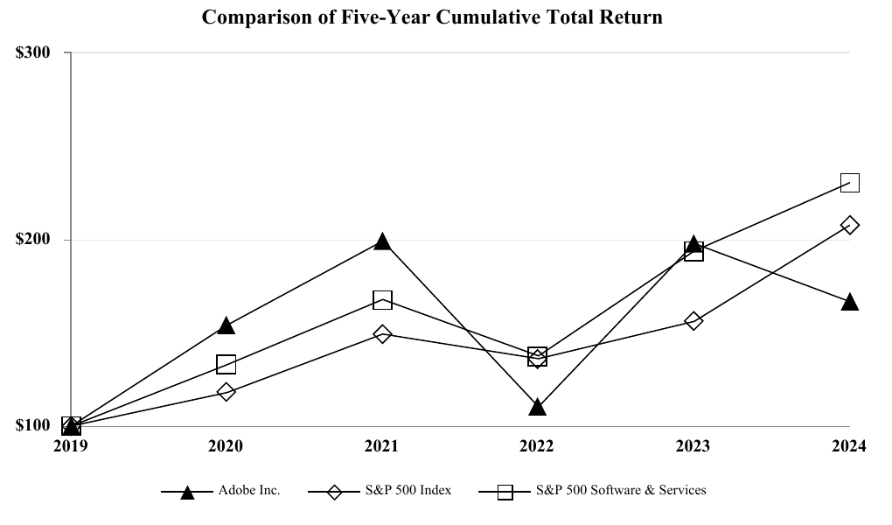

50 questions (15 development / 35 heldout), six original images and six captions. Inspect each original image and PDF locator. Record pass, reject or uncertainty in the blank decision file. Do not infer point values from curve positions. A label author cannot independently approve their own work.
This packet neither authenticates a human reviewer nor completes the separate 50-generated-output audit. Final experiment gates remain closed until real acceptance and the required runtime/data bindings exist.
0000320193-21-000105:chart:ad0ded84e0a5b9dbf96385d1debb0cf711f6f1bec501dda9c067091526dd83a9
Original PDF, page 22
{
"title": "Comparison of 5-Year Cumulative Total Return",
"chart_type": "line chart",
"x_axis": "Date",
"y_axis": null,
"units": "$ (dollar symbol; ISO currency code not printed)",
"periods": [
"9/23/16",
"9/30/17",
"9/29/18",
"9/28/19",
"9/26/20",
"9/25/21"
],
"series": [
"Apple Inc.",
"S&P 500 Index",
"S&P Information Technology Index",
"Dow Jones U.S. Technology Supersector Index"
],
"unknowns": [
"Exact point values are not printed; curve positions must not be treated as exact values.",
"An ISO currency code and explicit y-axis title are not printed."
],
"readable_values": []
}| ID / split | Question | Candidate answer and basis |
|---|---|---|
| apple2021-chart-dev-01 dev | What cumulative-return horizon is named in the chart title? | 5-year cumulative total return Title: COMPARISON OF 5-YEAR CUMULATIVE TOTAL RETURN. |
| apple2021-chart-dev-02 dev | Which company is compared with the market indices? | Apple Inc. Chart subtitle and solid-line legend. |
| apple2021-chart-dev-03 dev | Which three benchmark indices are listed? | S&P 500 Index; S&P Information Technology Index; Dow Jones U.S. Technology Supersector Index. Chart subtitle and legend. |
| apple2021-chart-dev-04 dev | What is the earliest displayed date on the horizontal axis? | 9/23/16 Leftmost horizontal-axis label. |
| apple2021-chart-dev-05 dev | What is the latest displayed date on the horizontal axis? | 9/25/21 Rightmost horizontal-axis label. |
| apple2021-chart-dev-06 dev | List the displayed dates in chronological order. | 9/23/16; 9/30/17; 9/29/18; 9/28/19; 9/26/20; 9/25/21. All six horizontal-axis labels. |
| apple2021-chart-dev-07 dev | What currency symbol is displayed on the vertical-axis tick labels? | $ (dollar sign). Vertical-axis tick labels from $0 through $600. Currency code is not printed. |
| apple2021-chart-dev-08 dev | What are the minimum and maximum labeled vertical-axis ticks? | $0 and $600. Bottom and top vertical-axis tick labels. |
| apple2021-chart-dev-09 dev | What is the interval between consecutive labeled vertical-axis ticks? | $100. Ticks $0, $100, $200, $300, $400, $500, $600. |
| apple2021-chart-dev-10 dev | How many distinct series appear in the legend? | Four. Apple plus three benchmark legend entries. |
| apple2021-chart-dev-11 dev | Which line style represents Apple Inc.? | Solid line. Apple Inc. legend swatch. |
| apple2021-chart-dev-12 dev | Which line style represents the S&P 500 Index? | Long dashed line. S&P 500 Index legend swatch. |
| apple2021-chart-dev-13 dev | Which line style represents the S&P Information Technology Index? | Short dashed line. S&P Information Technology Index legend swatch. |
| apple2021-chart-dev-14 dev | Which line style represents the Dow Jones U.S. Technology Supersector Index? | Dotted line. Dow Jones legend swatch; full name in subtitle. |
| apple2021-chart-dev-15 dev | Can the exact final Apple return value be read from a printed point label? | Unknown: no exact numeric point label is printed; do not estimate from the curve. Final solid-line endpoint is unlabelled; axis ticks alone do not establish an exact value. |
0001045810-24-000029:chart:41716e31eeb23fe0a516c2fb510c56ea5fa400fddf25a8c8310f8acd921f9e5a
Original PDF, page 133
{
"title": "Comparison of 5 Year Cumulative Total Return",
"chart_type": "line chart",
"x_axis": null,
"y_axis": null,
"units": null,
"periods": [
"01/27/19",
"01/26/20",
"01/31/21",
"01/30/22",
"01/29/23",
"01/28/24"
],
"series": [
"NVIDIA Corporation",
"S&P 500",
"Nasdaq 100"
],
"unknowns": [
"Exact numeric point labels are not printed.",
"Vertical tick labels have no currency/percent symbol or explicit unit; do not infer a unit."
],
"readable_values": []
}| ID / split | Question | Candidate answer and basis |
|---|---|---|
| nvda-chart-heldout-01 heldout | Which company is represented by green circular markers? | NVIDIA Corporation. Legend associates the green circle with NVIDIA Corporation. |
| nvda-chart-heldout-02 heldout | Which benchmark is represented by purple downward-pointing triangles? | Nasdaq 100. Purple inverted-triangle swatch in the legend. |
| nvda-chart-heldout-03 heldout | How many separate plotted series are identified in the legend? | 3. Legend has green-circle, gray-square and purple-inverted-triangle entries. |
| nvda-chart-heldout-04 heldout | At the rightmost date, rank the green-circle, purple-triangle and gray-square series from highest to lowest. | NVIDIA Corporation (green circles), Nasdaq 100 (purple inverted triangles), S&P 500 (gray squares). Rightmost three marker heights are distinctly ordered; marker-to-series mapping comes from the legend. |
| nvda-chart-heldout-05 heldout | Does the green-circle line rise or fall between 01/30/22 and 01/29/23? | It falls. Green circle at 01/29/23 is lower than the circle at 01/30/22. |
| nvda-chart-heldout-06 heldout | From 01/29/23 to 01/28/24, which marked series has the steepest visible upward segment? | NVIDIA Corporation, the green-circle series. Final green segment rises far more vertically than the purple or gray segments over the same horizontal interval. |
| nvda-chart-heldout-07 heldout | What is the spacing between consecutive labeled vertical-axis ticks? | 200; no currency or percent symbol is printed on those ticks. Labeled vertical ticks are 0, 200, 400, ... 1,800. |
0000002488-25-000012:chart:a64c086a9af2be3b7aa2a0a69177acc2dd73b64fadedda64c6cc86cc4ca729e0
Original PDF, page 45
{
"title": "Comparison of Cumulative Five Year Total Return",
"chart_type": "line chart",
"x_axis": null,
"y_axis": "Index Value",
"units": "Index Value",
"periods": [
"2019",
"2020",
"2021",
"2022",
"2023",
"2024"
],
"series": [
"Advanced Micro Devices, Inc.",
"S&P 500 Index",
"S&P 500 Semiconductors Index"
],
"unknowns": [
"Exact numeric point labels are not printed."
],
"readable_values": []
}| ID / split | Question | Candidate answer and basis |
|---|---|---|
| amd-chart-heldout-01 heldout | Which company is represented by filled circular markers? | Advanced Micro Devices, Inc. Filled-circle legend swatch. |
| amd-chart-heldout-02 heldout | Which benchmark uses filled upward-pointing triangle markers? | S&P 500 Semiconductors Index. Triangle legend swatch names the semiconductor index. |
| amd-chart-heldout-03 heldout | At 2024, rank the triangle-, circle- and square-marked series from highest to lowest. | S&P 500 Semiconductors Index (triangles), Advanced Micro Devices, Inc. (circles), S&P 500 Index (squares). The three 2024 markers are clearly separated vertically; legend supplies their names. |
| amd-chart-heldout-04 heldout | Between 2023 and 2024, what opposite directions do the circle-marked and triangle-marked lines take? | The AMD circle-marked line falls, while the semiconductor-index triangle-marked line rises. Final circle segment slopes down and final triangle segment slopes up. |
| amd-chart-heldout-05 heldout | Which benchmark is represented by filled square markers? | S&P 500 Index. Filled-square legend swatch. |
| amd-chart-heldout-06 heldout | Which adjacent-year interval shows all three plotted lines decreasing? | 2021 to 2022. All three segments slope downward from their 2021 markers to their 2022 markers. |
| amd-chart-heldout-07 heldout | What words are printed as the vertical-axis label? | Index Value. Vertical text alongside the left axis. |
0000050863-25-000009:chart:3642d2aa1cafa2bf25997038d695b2444169d4737f3d14a8a539b281259a7568
Original PDF, page 52
{
"title": null,
"chart_type": "line chart",
"x_axis": null,
"y_axis": null,
"units": "$ (dollar symbol; ISO currency code not printed)",
"periods": [
"2019",
"2020",
"2021",
"2022",
"2023",
"2024"
],
"series": [
"Intel Corporation",
"S&P 100 Index",
"S&P 500 Index",
"S&P 500 IT Index",
"SOX Index"
],
"unknowns": [
"Exact numeric point labels are not printed.",
"This original embedded graph image contains no separate title or axis titles; the full source page supplies its heading."
],
"readable_values": []
}| ID / split | Question | Candidate answer and basis |
|---|---|---|
| intc-chart-heldout-01 heldout | Which company is represented by the blue line with circular markers? | Intel Corporation. Blue circle and line in the legend. |
| intc-chart-heldout-02 heldout | Which benchmark uses gray downward-pointing triangle markers? | S&P 500 IT Index. Inverted-triangle legend swatch. |
| intc-chart-heldout-03 heldout | Which benchmark uses gray star-shaped markers? | S&P 500 Index. Star legend swatch. |
| intc-chart-heldout-04 heldout | At 2024, rank all five marked series from highest to lowest. | S&P 500 IT Index (inverted triangles), SOX Index (upright triangles), S&P 100 Index (diamonds), S&P 500 Index (stars), Intel Corporation (blue circles). Rightmost marker heights and legend identities; no exact point values are inferred. |
| intc-chart-heldout-05 heldout | Does the blue-circle line rise or fall between 2022 and 2023? | It rises. The 2023 blue circle is above the 2022 blue circle. |
| intc-chart-heldout-06 heldout | At the rightmost year, is the blue-circle line above or below every gray benchmark line? | Below all four gray benchmark lines. The rightmost blue circle is lower than all four gray markers. |
| intc-chart-heldout-07 heldout | What is the highest labeled vertical-axis tick? | $350. Top label on the left vertical axis. |
0000858877-24-000017:chart:00a0413e774c92f87057747c8cfa9aa0fbaf8da5d952666fa9e84b94a3980098
Original PDF, page 50
{
"title": "Comparison of 5-Year Cumulative Total Return Among Cisco Systems, Inc., the S&P 500 Index, and the S&P Information Technology Index",
"chart_type": "line chart",
"x_axis": null,
"y_axis": null,
"units": "$ (dollar symbol; ISO currency code not printed)",
"periods": [
"July 2019",
"July 2020",
"July 2021",
"July 2022",
"July 2023",
"July 2024"
],
"series": [
"Cisco Systems, Inc.",
"S&P 500",
"S&P 500 Information Technology"
],
"unknowns": [
"Exact numeric point labels are not printed; the endpoint must not be estimated as an exact amount."
],
"readable_values": []
}| ID / split | Question | Candidate answer and basis |
|---|---|---|
| csco-chart-heldout-01 heldout | Which company uses a solid line with open square markers? | Cisco Systems, Inc. Solid-line/open-square legend entry. |
| csco-chart-heldout-02 heldout | Which benchmark uses a dashed line with open circular markers? | S&P 500 Information Technology. Dashed-line/open-circle legend entry. |
| csco-chart-heldout-03 heldout | Which benchmark uses a dotted line with open triangle markers? | S&P 500. Dotted-line/open-triangle legend entry. |
| csco-chart-heldout-04 heldout | At July 2024, which line-and-marker combination is highest, and which series does it represent? | The dashed line with open circles, representing S&P 500 Information Technology. Rightmost open circle is above the triangle and square; legend identifies it. |
| csco-chart-heldout-05 heldout | Can the exact July 2024 Cisco value be read from a printed numeric point label in this chart image? | Unknown: no exact numeric point label is printed; do not estimate the value from the curve. The final open square has no numeric annotation; the neighboring source table is excluded from this image. |
| csco-chart-heldout-06 heldout | Between July 2021 and July 2022, do all three plotted lines rise or all three fall? | All three fall. All three segments slope downward between those two labeled dates. |
| csco-chart-heldout-07 heldout | How many different line-and-marker entries appear in the legend? | 3. One square/solid, one triangle/dotted and one circle/dashed entry. |
0000796343-25-000004:chart:18b7538a6a3bb7b25dbab03a1b764a17a0d52941feba6f1ef157b34a37c3bb97
Original PDF, page 101
{
"title": "Comparison of Five-Year Cumulative Total Return",
"chart_type": "line chart",
"x_axis": null,
"y_axis": null,
"units": "$ (dollar symbol; ISO currency code not printed)",
"periods": [
"2019",
"2020",
"2021",
"2022",
"2023",
"2024"
],
"series": [
"Adobe Inc.",
"S&P 500 Index",
"S&P 500 Software & Services"
],
"unknowns": [
"Exact numeric point labels are not printed."
],
"readable_values": []
}| ID / split | Question | Candidate answer and basis |
|---|---|---|
| adbe-chart-heldout-01 heldout | Which company is represented by filled upward-pointing triangles? | Adobe Inc. Filled-triangle legend swatch. |
| adbe-chart-heldout-02 heldout | Which benchmark uses open diamond markers? | S&P 500 Index. Open-diamond legend swatch. |
| adbe-chart-heldout-03 heldout | Which benchmark uses open square markers? | S&P 500 Software & Services. Open-square legend swatch. |
| adbe-chart-heldout-04 heldout | At 2024, rank the open-square, open-diamond and filled-triangle series from highest to lowest. | S&P 500 Software & Services (open squares), S&P 500 Index (open diamonds), Adobe Inc. (filled triangles). Rightmost marker heights and the legend; no exact plotted amount is inferred. |
| adbe-chart-heldout-05 heldout | Between 2023 and 2024, does the filled-triangle line move in the same direction as the two open-marker lines? | No. Adobe's filled-triangle line falls, while the open-square and open-diamond benchmark lines rise. Opposite slopes of the final segments. |
| adbe-chart-heldout-06 heldout | Which three dollar-denominated vertical-axis tick labels are printed? | $100, $200 and $300. Three printed labels on the left vertical axis. |
| adbe-chart-heldout-07 heldout | What are the first and last year labels printed on the horizontal axis? | 2019 and 2024. Leftmost and rightmost horizontal-axis year labels. |